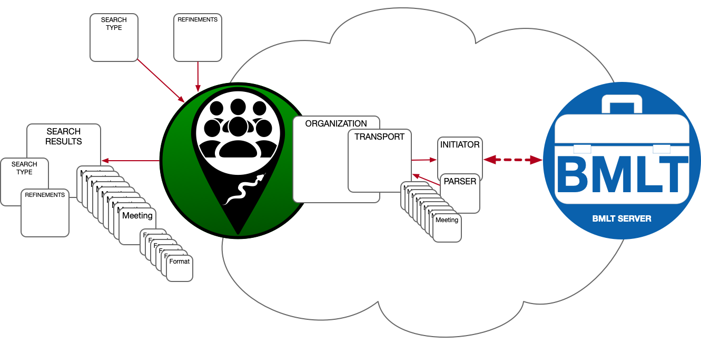

View on GitHub
View on GitHub
 Reference
Reference
LGV_MeetingSDK
An adaptible SDK, for finding and listing regularly-occurring, scheduled events.
Overview

This SDK provides a (mostly) protocol-based definition of an SDK that can be applied to low-level server connections, when the server provides information on regularly-scheduled (weekly) events.
The information is “commoditized” into a relatively straightforward structure, so different types of servers, with different behaviors, can be abstracted behind a common façade.
What Problem Does This Solve?
There are very many databases and APIs available, for online scheduling of meetings, and it can be quite daunting, to develop connectors to all of them.
This SDK is a “baseline” platform that can be extended and specialized, into discrete, focused, connectors that can be “mixed and matched,” and return a single, consistent data structure.
It also allows a “native” Swift approach to these connectors, using modern, platform-agnostic Swift.
Requirements
This is a Swift-only SDK, and is meant to be used by native Swift Apple implementations. It will work for all Apple platforms (iOS, iPadOS, WatchOS, MacOS, and TVOS).
There are no dependencies for the SDK, but the test harness app has some dependencies:
What Is A “Meeting”?
For the purposes of this SDK, a meeting is a regularly-occurring event, happening at a certain physical location, or virtual venue (or both). The cadence is weekly.
There are provisions for “one-off” events, but these would best be handled by something like a calendar or scheduling system.
Meetings are associated with “Organizations.”
What Is An “Organization”?
This SDK is being developed in order to specifically address the technical needs of propagating scheduling information for 12-Step Recovery organizations, like AA and NA, however, it does not need to be restricted to these types of fellowships. It may also be used to “mix and match” meetings from different organizations.
SDK Structure
The basic structure of the SDK, is an instance of the SDK, specialized for a certain API (for example, the BMLT API), that will have an organization assigned. This organization will have a “transport” assigned, which takes care of querying the server, and parsing the response. It does this, via “initiators,” and “parsers.”

In the diagram above, we see the SDK being used as a connector to a BMLT server.
A search is initiated by the user of the SDK, by providing a Search Type, and Search Refinements. These define the parameters of the search.
The SDK then gets the Transport instance from its Organization instance, and asks it to perform the search.
The Transport instance has an Initiator instance, as well as a Parser instance, that will take care of the actual interaction (in this case, HTTPS) with the Meeting List Server (in this case, a BMLT server instance).
The initiator knows how to translate the generic Search Type (and, possibly, the Refinements) into a server query, and sends a request to the Meeting List Server that satisfies the parameters of the requested search.
The server responds with an answer to the query (in this case, JSON data), which the Initiator sends to the Parser, which renders it into the basic object model that will be passed to the SDK user.
Each Meeting instance may have multiple Format instances attached. These are metadata that define various attributes of the meeting. It will also have at least one Physical Venue, or at least one Virtual Venue. It can have both types of venues (Called a “hybrid” meeting).
The response to the user is returned in a Swift Completion Block.
The response contains the initial search request parameters, as well as any meetings found, that satisfy the request. Any errors encountered are also returned in the closure.
Built-In Connectors
Currently, the only specialized connector, is one for the BMLT, a modern, worldwide API for NA meetings.
Here is the source code for the BMLT connector.
Examples
Examples of the use of the SDK are available in The Unit Tests, and The Test Harness.
Where To Get
Swift Package Manager (SPM)
- The HTTPS URL for the package is
https://github.com/LittleGreenViper/LGV_MeetingSDK. - The SSH URI for the package is
git@github.com:LittleGreenViper/LGV_MeetingSDK.git.
Carthage
You implement it by adding the following line in your Cartfile:
`github "LittleGreenViper/LGV_MeetingSDK"`
Usage
You need to have a concrete implementation of the LGV_MeetingSDK_Protocol. Currently, there is only one: the LGV_MeetingSDK_BMLT class. The following example will use that class.
Instantiate the class, along with any settings and/or parameters (each concrete implementation will have its own rules), and call the LGV_MeetingSDK_Protocol.meetingSearch(type:refinements:refCon:completion:) method.
First, instantiate the SDK:
// We specify the worldwide TOMATO server, for this example.
guard let rootServerURL = URL(string: "https://tomato.bmltenabled.org/main_server") else { return }
let sdkInstance = LGV_MeetingSDK_BMLT(rootServerURL: rootServerURL)
Then, specify the search type, by instantiating an instance of LGV_MeetingSDK_Meeting_Data_Set.SearchConstraints:
// Search around Central Park, in New York City, for 10 meetings, at a maximum distance from the search center, of 20 Km.
let searchCenter = CLLocationCoordinate2D(latitude: 40.7812, longitude: -73.9665)
let searchType = LGV_MeetingSDK_Meeting_Data_Set.SearchConstraints(.autoRadius(centerLongLat: searchCenter,
minimumNumberOfResults: 10,
maxRadiusInMeters: 20000
)
)
You can also specify various search constraints, such as whether or not to look for meetings that gather on certain days of the week, which you specify by instantiating an instance of LGV_MeetingSDK_Meeting_Data_Set.Search_Refinements:
// Look for meetings on the weekend.
let searchRefinements = LGV_MeetingSDK_Meeting_Data_Set.Search_Refinements(.weekdays([.sunday, .saturday]))
Finally, you’ll need to have a callback completion block, which is defined as LGV_MeetingSDK_SearchInitiator_Protocol.MeetingSearchCallbackClosure:
Note
This is likely to be called in a non-main thread.
func completionBlock(_ inSearchResults: LGV_MeetingSDK_Meeting_Data_Set_Protocol?, _ inError: Error?) {
if let error = inError {
print("There was an error!\n\t\(error.localizedDescription)")
} else if let searchResults = inSearchResults {
print("These are the search results:\n\t\(searchResults.debugDescription)")
} else {
print("This should not happen! Nothing was returned!")
}
}
And then, call the LGV_MeetingSDK_Protocol.meetingSearch(type:refinements:refCon:completion:) method, with these arguments:
sdkInstance.meetingSearch(type: searchType, refinements: searchRefinements, completion: completionBlock)
Of course, since this is Swift, we can “shortcut” everything, like so:
guard let rootServerURL = URL(string: "https://tomato.bmltenabled.org/main_server") else { return }
LGV_MeetingSDK_BMLT(rootServerURL: rootServerURL)
.meetingSearch(type: LGV_MeetingSDK_Meeting_Data_Set.SearchConstraints(.autoRadius(centerLongLat: searchCenter, minimumNumberOfResults: 10, maxRadiusInMeters: 20000)),
refinements: LGV_MeetingSDK_Meeting_Data_Set.Search_Refinements(.weekdays([.sunday, .saturday]))
) { (_ inSearchResults: LGV_MeetingSDK_Meeting_Data_Set_Protocol?, _ inError: Error?) in
if let error = inError {
print("There was an error!\n\t\(error.localizedDescription)")
} else if let searchResults = inSearchResults {
print("These are the search results:\n\t\(searchResults.debugDescription)")
} else {
print("This should not happen! Nothing was returned!")
}
}
License
The SDK is provided as MIT-licensed code.
Copyright 2022 Little Green Viper Software Development LLC
Permission is hereby granted, free of charge, to any person obtaining a copy of this software and associated documentation files (the “Software”), to deal in the Software without restriction, including without limitation the rights to use, copy, modify, merge, publish, distribute, sublicense, and/or sell copies of the Software, and to permit persons to whom the Software is furnished to do so, subject to the following conditions:
The above copyright notice and this permission notice shall be included in all copies or substantial portions of the Software.
THE SOFTWARE IS PROVIDED “AS IS”, WITHOUT WARRANTY OF ANY KIND, EXPRESS OR IMPLIED, INCLUDING BUT NOT LIMITED TO THE WARRANTIES OF MERCHANTABILITY, FITNESS FOR A PARTICULAR PURPOSE AND NONINFRINGEMENT. IN NO EVENT SHALL THE AUTHORS OR COPYRIGHT HOLDERS BE LIABLE FOR ANY CLAIM, DAMAGES OR OTHER LIABILITY, WHETHER IN AN ACTION OF CONTRACT, TORT OR OTHERWISE, ARISING FROM, OUT OF OR IN CONNECTION WITH THE SOFTWARE OR THE USE OR OTHER DEALINGS IN THE SOFTWARE.